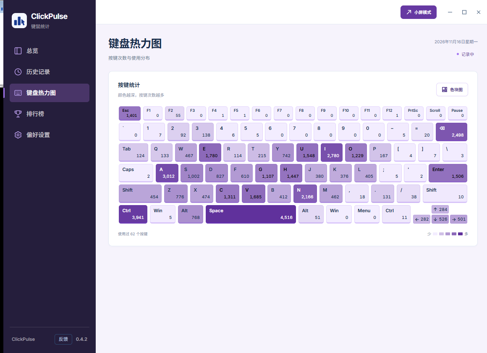
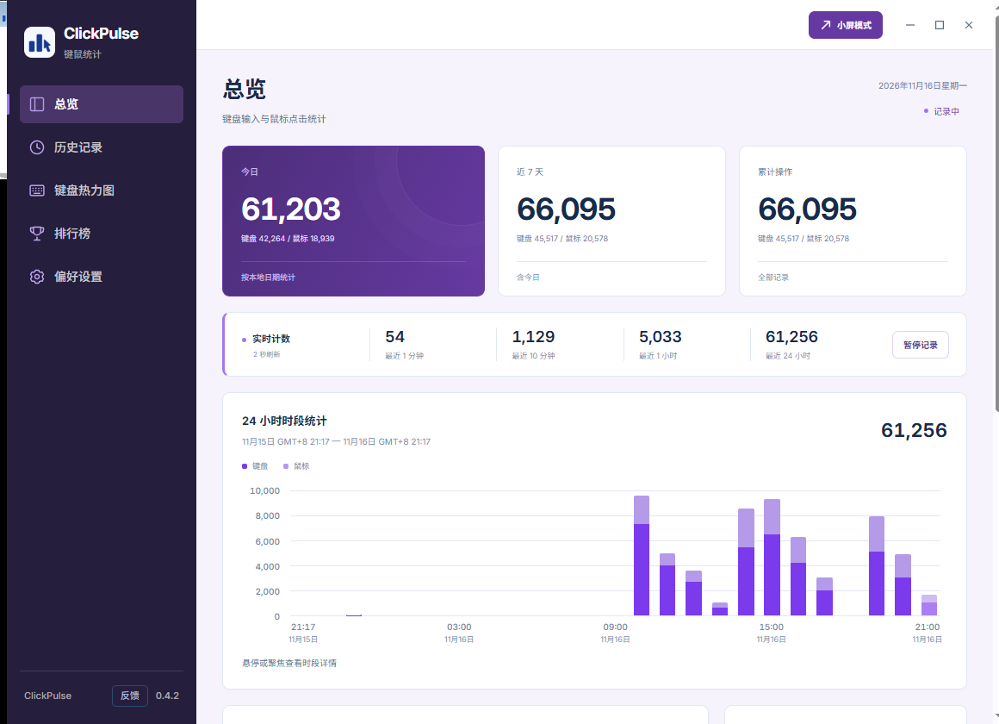
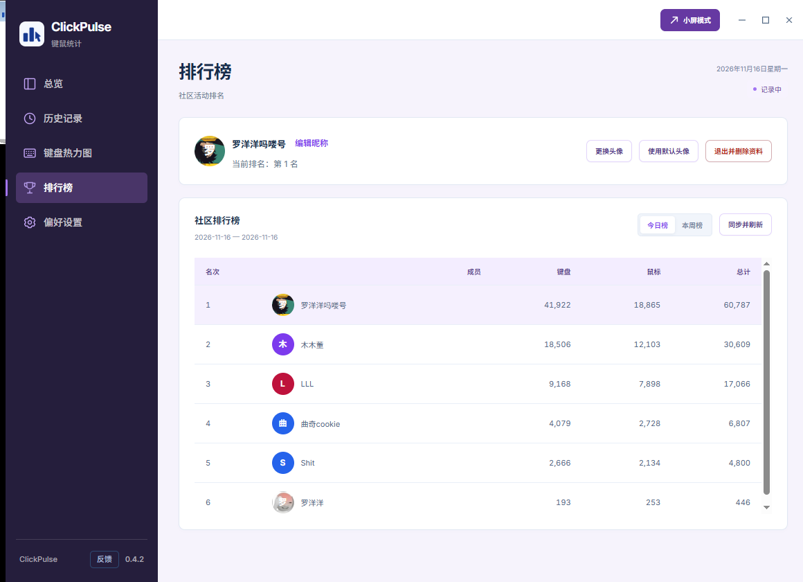
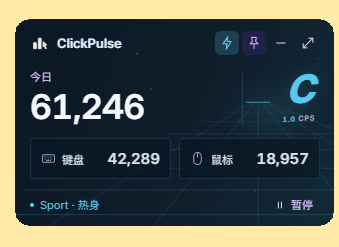

A
哪些键，成了你的肌肉记忆？
热力图把每一次按键叠成颜色。写代码、做表格、剪视频，每种工作都会留下不同的形状。
正在获取最新版本
ClickPulse 在本地统计键盘和鼠标次数。看看今天有多忙，自己的节奏怎样变化，偶尔也和别人比一比。
次数不代表效率，但它能让普通的一天变得可见。
无需账号 不含遥测 支持 Windows、macOS 和 Linux

今日输入量级
每个岗位的输入方式不同。把今天和过去的自己放在一起看，比用次数评价谁更努力更有意义。
这是一套趣味里程碑，不是生产力评分。
一份电脑输入日记

热力图把每一次按键叠成颜色。写代码、做表格、剪视频，每种工作都会留下不同的形状。
排行榜按日或按周汇总键盘和鼠标次数。加入完全自愿，昵称、身份和头像都由你决定。

小窗口留在桌面一角，显示今天的键盘、鼠标和实时速度。它不催促你，也不打断正在做的事。

隐私边界
正常统计完全离线。只有你主动加入排行榜时，每日键盘和鼠标总次数才会上传。
带走你自己的输入日记
选择你的系统。官网只跟随正式稳定版更新。
Windows 10 / 11 · x64
macOS 12+
Ubuntu 22.04 / 24.04
首次打开提示： Windows 和 macOS 版本暂未购买代码签名证书，系统可能显示安全提醒。安装包可以通过 SHA256 和公开源码校验。 查看安装说明
开放源码
ClickPulse-Social 是 endNone/ClickPulse 的独立二次开发版本，由罗洋洋维护，继续采用 GPL-3.0-or-later 许可证。